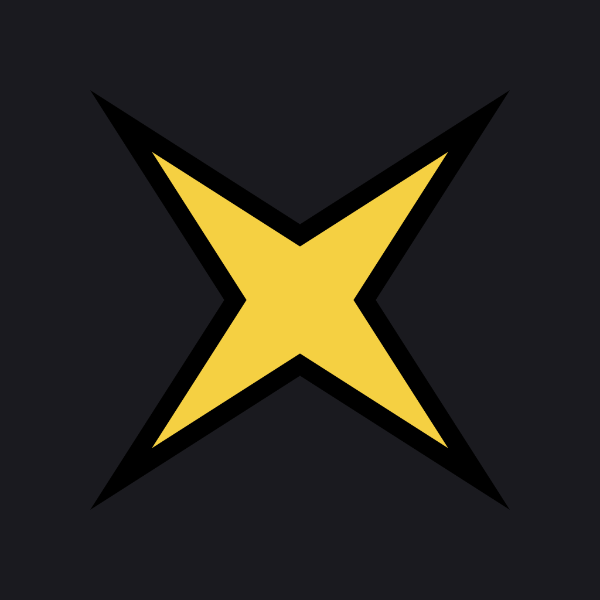
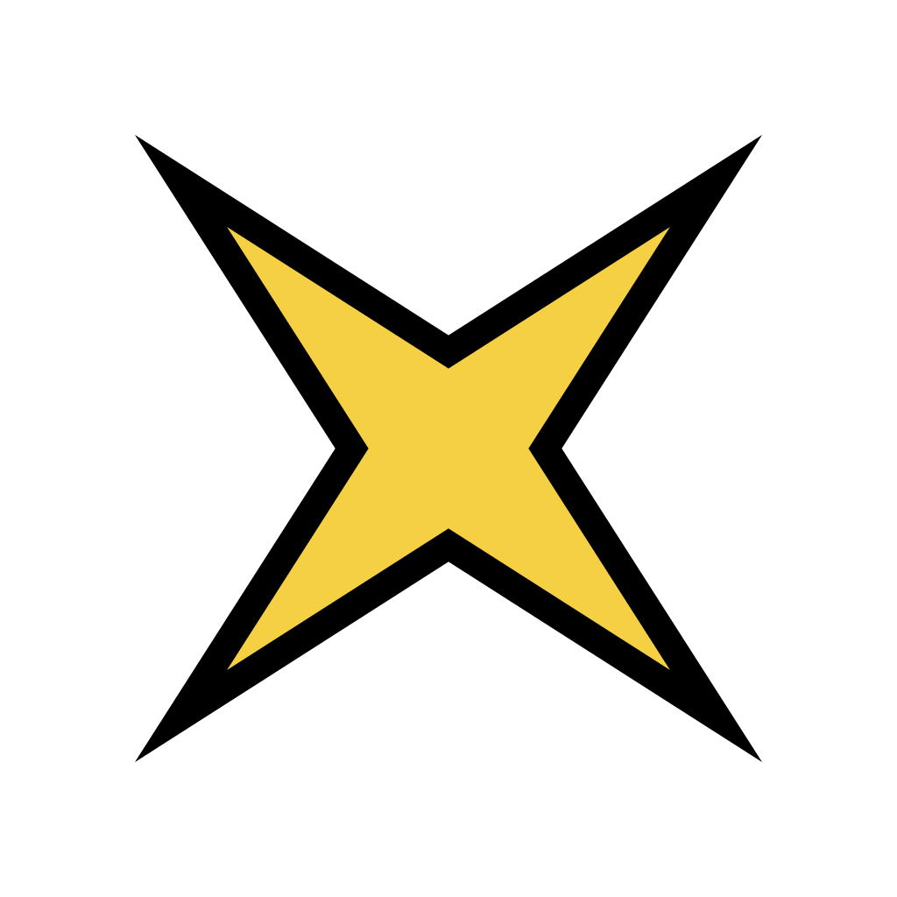
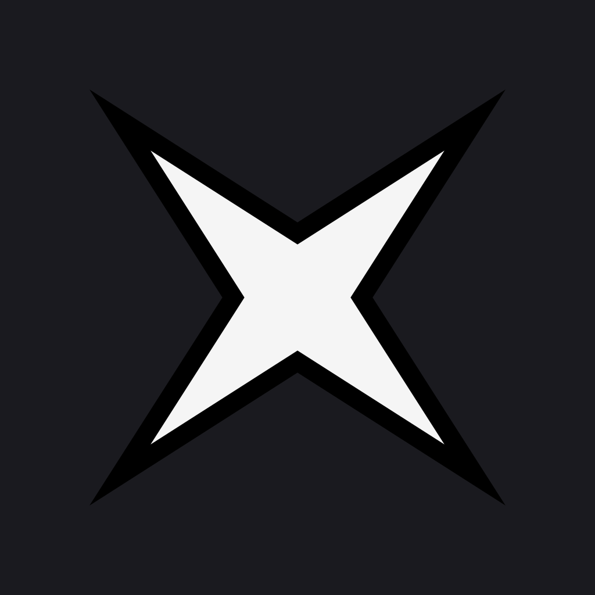
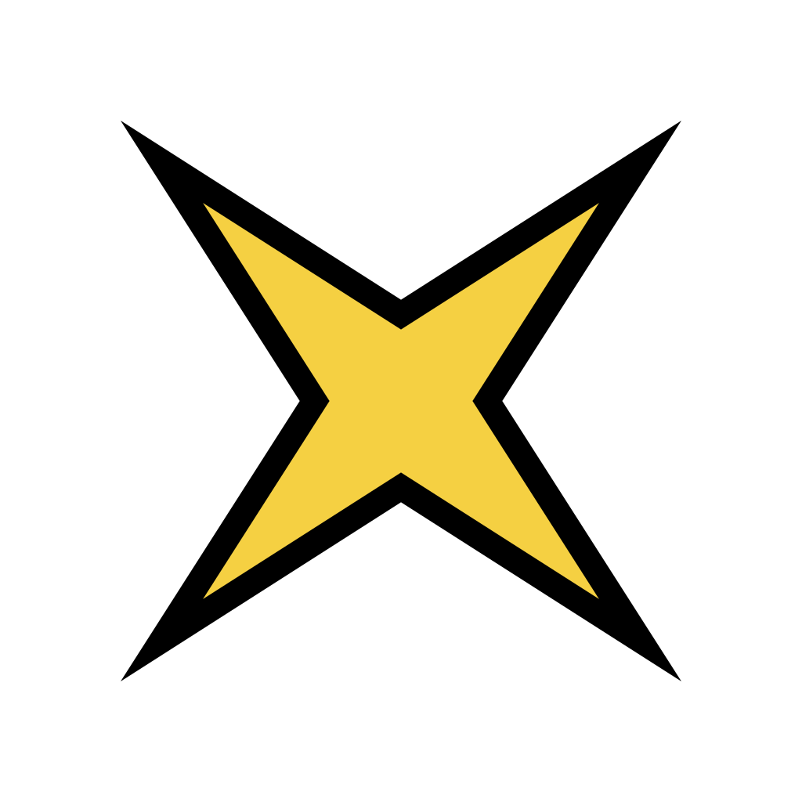
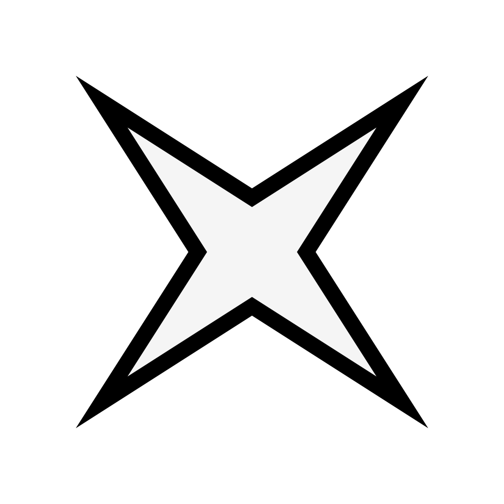

black outline on the X means transparent variants stay legible on light, dark, or any browser tab. solid-bg variants are for ios app icons.
yellow X on dark bg — full-bleed for the apple-touch-icon. converts to PNG at 180/192/512.

same yellow X with black outline, no bg fill. legible on any browser tab theme.

white X on dark bg — distinct enough to instantly know "this is the local build" on the home screen.

white X with black outline. the outline carries it on light bgs where the white would otherwise vanish.
yellow X with black outline on white. cleaner, brighter feel — works for light contexts.

white X on white bg means only the black outline shows — outline-only / line-art aesthetic. unique look but visually weaker than dark-bg variant.
